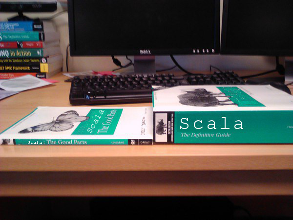

name: looper layout: true class: looper --- name: image layout: true class: center, middle, image --- name: image-white layout: true class: center, middle, image, image-white --- name: image-last layout: true class: center, middle, image, image-last --- name: ambiata layout: true class: ambiata --- name: ambiata-full layout: true class: center, middle, ambiata-full --- name: code-small layout: true class: code-small --- name: question layout: true class: center, middle, question --- name: rule layout: true class: center, middle, rule --- name: inverse layout: true class: center, middle, inverse --- class: center, middle template: image  # Property Based Testing (Part 2) --- template: ambiata-full # Ambiata --- layout: false ## Previously - Declan talked about "why" --- ## Today - Examples of _how_ - Almost like _patterns_ - More motivation for _why_ --- ## Hello World ```scala import org.specs2._ import org.scalacheck._ class MySpec extends Specification with ScalaCheck { def is = "List reverse" ! prop { (a: String ) => a.reverse.reverse ==== a } } ``` --- ## Hello World ```scala prop { (a: String ) => a.reverse.reverse ==== a } ``` --- template: inverse # There and back again <img src="http://www.fatmovieguy.com/wp-content/uploads/2014/01/The-Hobbit-There-and-Back-Again.jpg" /> --- template: image <img src="http://fsharpforfunandprofit.com/assets/img/property_inverse.png" /> --- layout: false ## Example - JSON ```scala prop { (a: DomainObject ) => fromJson(toJson(a)) ==== a.right } ``` --- ## Example - Read/Write ```scala prop { (a: DomainObject ) => read(write(a)) ==== a.right } ``` --- ## Capture ```scala def simple[A, B](a: A, f: A => B, g: B => A): Boolean = g(f(a)) == a def complex[A: Equal, B, F[_]: Functor] (a: A, f: A => B, g: B => F[A]): F[Boolean] = f(a).map(g).map(_ == a) ``` --- ## Examples - read/write - json - serialization --- template: inverse # Multiple Paths --- template: image <img src="http://fsharpforfunandprofit.com/assets/img/property_commutative.png" /> --- layout: false ## Hello World ```scala prop { (a: String ) => TODO(a) ==== TODO2(a) } ``` --- ## Performance ```scala def sortMutable[A](a: List[A]): List[A] = { val b = List.newBuilder[A](a.length) ... b.result() } prop { (a: List[Int] ) => sortMutable(a) ==== a.foldLeft(List[A])(_ :: _) } ``` --- ## Alternative ```scala prop { (a: List[Int] ) => sortMutable(a) ==== a.sorted } ``` --- ## Example in the wild ```scala def dayMinus(d: Date, i: Int): Date = { ... } prop { (a: Date, i: Int ) => dayMinus(d, i) ==== JodaTime.minusDays(d.toJoda, i) } ``` --- template: inverse # Idempotence --- layout: false ## TODO ```scala prop { (a: String ) => } ``` --- ## Capture ```scala def ``` --- template: inverse # Invariants --- layout: false ## ```scala prop { (a: String ) => TODO(a) ==== TODO2(a) } ``` --- NOTES: - minOkTests - Arbitraries - Whole section? - frequency --- layout: false # Links - John Hughes - "Testing the Hard Stuff and Staying Sane" - https://www.youtube.com/watch?v=zi0rHwfiX1Q - Jessica Kerr - "Property-Based Testing for Better Code" - https://www.youtube.com/watch?v=shngiiBfD80 - "Choosing properties for property-based testing" - http://fsharpforfunandprofit.com/posts/property-based-testing-2/